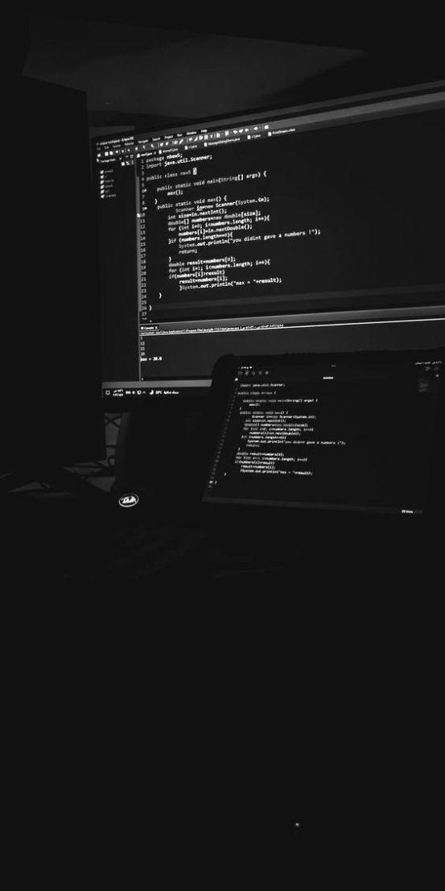
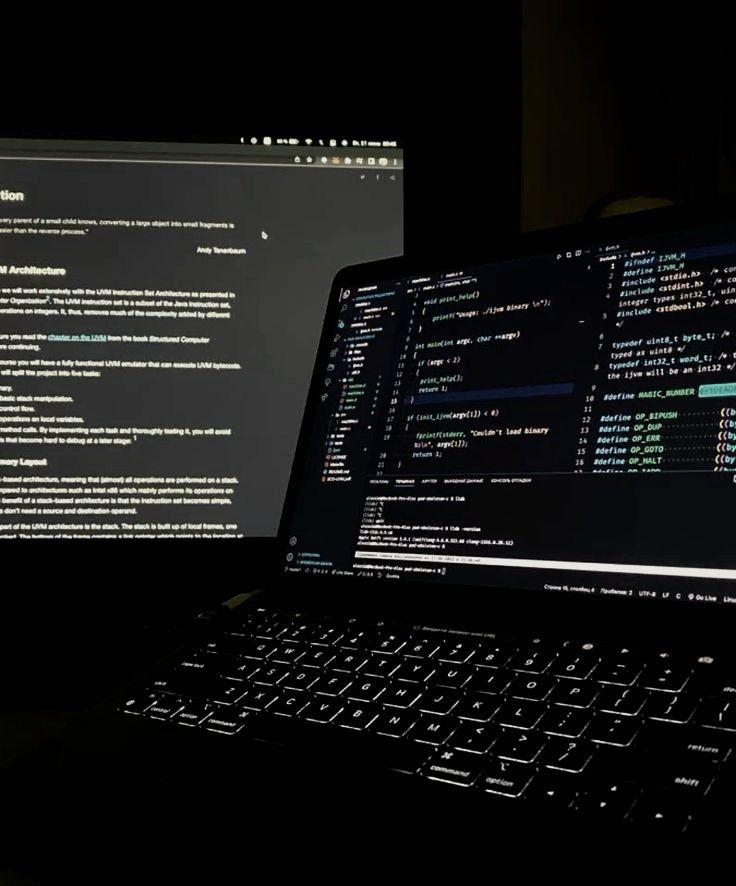
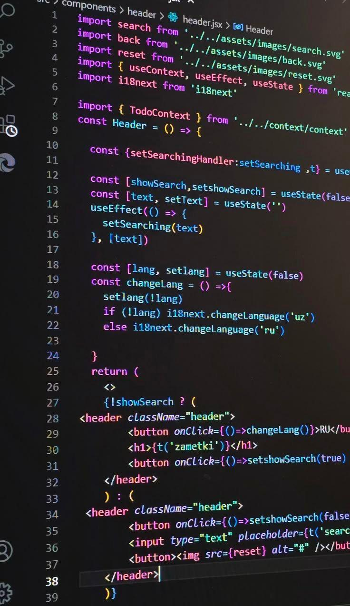
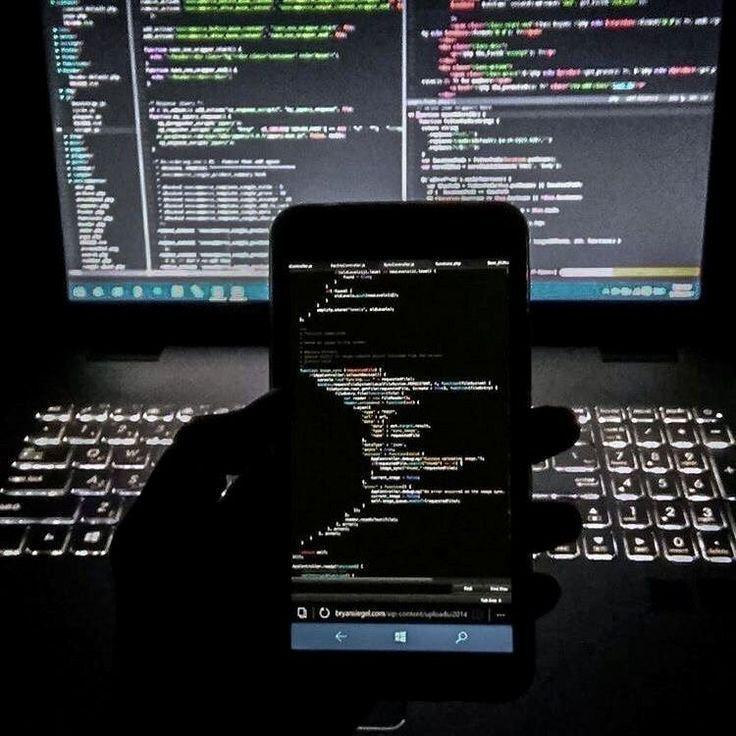

I design and develop full-stack web applications with a strong
focus on usability, perfomance and layout. My work combines
clean code, insightful design and strategic problem‑solving
to create impactful digital experiences.
I am a Software Developer with Advanced Diploma in Information Technology from Vaal University of Technology. My academic background has equipped me with strong foundations in Software Development, web Development, Business Analysis and Data Analysis. I specialize in building responsive, user-friendly applications and intelligent digital solutions. With experience in UX design, chatbot development and AI-driven systems, I focus on writing clean, adaptable code that solves real-world problems and delivers meaningful impact.
Vaal University of Technology · Vanderbiltpark
Focus: Software Development, advanced programming.
VUT · Coursework: Web Dev, Business Analysis, Software Dev, IT Support, Networking.
Mbilwi Secondary School, Sibasa
Languages: English, Tshivenda

Oct 2025 – User research, personas, journey maps. Improved navigation & usability for the student portal.

May 2025 – A customer-support botpress chatbot to assist users navigation(FAQs, recommendations).
try chatbotJul–Nov 2024 – Python, scikit‑learn, NLTK, MySQL. Chatbot & database schema.

Oct 2024 – A membership website using HTML, CSS, JS with scheduling & online payments.

HTML, CSS, JavaScript – interactive portal for youth programs, event registration and resource hub. (designed with modern UI)
As a fresh graduate I bring fresh knowledge, strong fundamentals and hands-on project experiences in web development, UX design and AI based systems. I am highly motivated to grow and I am not afraid of challenges. I am depandable, detail-oriented and commited to continuous learning. Hiring me means gaining someone who is ready tp learn fast, work hard, and contribute meaningfully from the start.
Python, JavaScript, Java, SQL, HTML/CSS — I build and ship. I combine technical skills with soft skills (leadership, communication).
phophimalise060@gmail.com
072 527 0033
References: Available upon request.